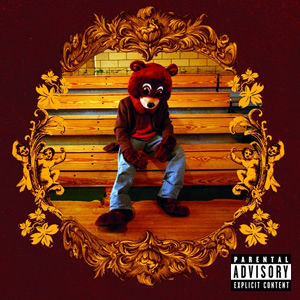
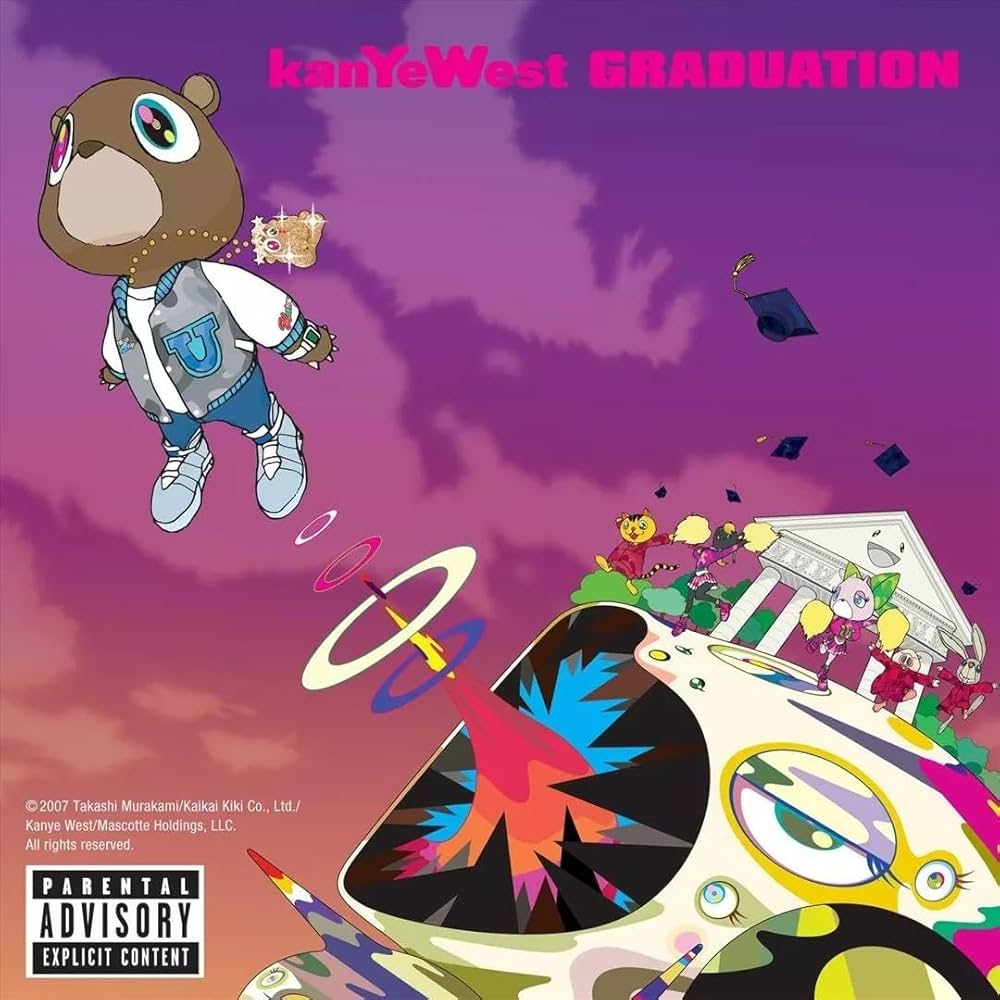
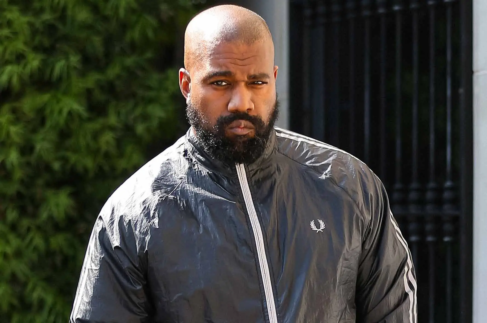
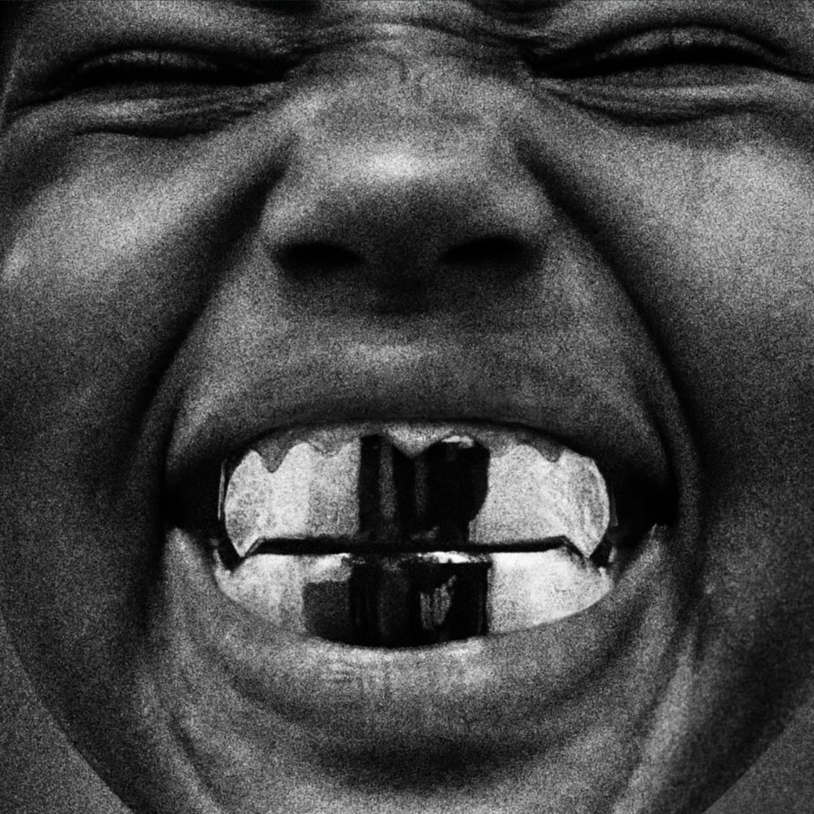

Late Registration (2005)


Esse álbum foi o primeiro de sua carreira e ouve diversos contratempos durante a sua produção. O primeiro era que nenhuma gravadora queria ele, incluindo a roc-a-fella (gravadora do Jay-Z), já que achava que ele era apenas alguém que fazia beats e não um rapper, assim, ele teve que tirar dinheiro do próprio bolso para a produção dele. Além disso, ele sofreu um acidente de carro que quebrou a sua mandíbula, danos ao cérebro (que seria um problema que afetaria futuramente a sua vida) e fez com que ele quase morresse e cancela-se seu álbum, no entanto, com todas essas diversidades, ele lançou o seu primeiro álbum.
As faixas desse álbum são incrivelmente marcantes, devido ao tanto de história por trás delas que ele mostra nas letras, como em Throught The Wire, que ele fala claramente de seu acidente com um sample de Chaka Khan "Through the Fire" (1984). Nesse sample ele mostra algo clássico em suas músicas que é o pitch up, que significa "aumentar o tom" da voz, ou seja, deixar mais agudo. Além disso ele mostra temas religiosos na faixa "Jesus Walk", fala de sua família em "Family Bussiness", uma faixa muito bonita em relação ao seu instrumental, e outros temas nas demais faixas que mostram o quanto o Kanye West é um gênio.
Esse álbum eu acho ele bem melhor em relação as suas letras, (2005), Kanye West explora uma mistura de questões raciais, desigualdade sistêmica, consumismo e dramas pessoais. O álbum aborda temas políticos, como o racismo institucional e o tráfico de drogas, ao mesmo tempo em que relata dificuldades financeiras e o sistema de saúde. Esse álbum musicalmente falando é uma das melhores experiências que você pode ouvir (como na maioria de seus álbuns), tendo faixas como Gold Digger, criticando as mulheres parceiros apenas pelo dinheiro, mas também satiriza os homens que se deixam explorar por causa da beleza ou do ego, Late, falando sobre o atraso de entregar algo, chegar em um compromisso e como isso se relaciona com seu trabalho, atrasando diversos álbuns por achar que não está bom o suficiente.

Lançado em 11 de setembro de 2007, Graduation nasceu da ambição de Kanye West em criar um som adequado para apresentações em estádios. Abandonando o som orquestral de seus trabalhos anteriores, o álbum abraçou a música eletrônica, sintetizadores e arranjos pop, além de ter a icônica capa desenhada pelo artista Takashi Murakami. Graduation fecha a trilogia dos seus primeiros 3 álbuns, sendo até agora uma das melhores discografias da história, com músicas incrivelmente marcantes que demonstrar a genialidade do Kanye West em inovar e criar sons únicos.
Good Morning é a faixa de abertura de Graduation, utilizando samples de Elton John para falar sobre renascimento, superação de obstáculos e o início de um novo ciclo. Stronger é uma faixa marcante de graduation, sendo o maior sucesso comercial do álbum, traz uma batida eletrônica frenética com sample de Daft Punk, abordando a mentalidade resiliente do artista. I Wonder, Uma das músicas mais famosas, com atmosfera espacial e reflexiva, que conta com os vocais de Labi Siffre, focando no esforço necessário para perseguir grandes sonhos.Flashing Light destaca-se pelo som etéreo de sintetizadores e arranjos futuristas para descrever os holofotes e as complicações da fama, sendo a faixa com maiores visualizações no Spotify.

Lançado em 2008, 808s & Heartbreak nasceu do luto e da dor após a morte da mãe de Kanye West e o fim de um noivado. Afastando-se dos raps tradicionais, Kanye usou o Auto-Tune como ferramenta expressiva e a bateria eletrônica Roland TR-808, criando um som melancólico que revolucionou o hip-hop global. O álbum quebrou a regra implícita no hip-hop de que rappers não podiam expressar tristeza profunda, insegurança ou fraqueza de forma melódica. Nomes como Drake, The Weeknd e Juice WRLD citam 808s como uma influência fundamental para seus trabalhos e para a ascensão do "rap emo" e reflexivo.
Heartless um dos maiores sucessos do disco, utiliza de batidas eletrônicas marcantes para narrar o fim de um relacionamento, capturando a vulnerabilidade do término. Love Lockdown que é uma das faixas mais aclamadas, combina os sintetizadores, vocais processados e um forte crescendo de percussão, criando uma atmosfera tensa e grandiosa. Street Lights é Considerada por muitos críticos a joia mais sombria do álbum. Tem um tom reflexivo e melancólico sobre a passagem do tempo e solidão. Paranoid com uma pegada mais synth-pop e electropop, possui um ritmo dançante que contrasta com a letra sobre insegurança e desconfiança nos relacionamentos.

Esse álbum nasceu de um cancelamento por conta de Kanye West Ter interrompido a Taylor Swift durante o Grammy (Ela tinha ganhado em categoria) e os críticos e até mesmo o presidente reprenderam o que ele fez e disseram que a músicas dele não eram tão boas quanto ele imaginava, assim, ele criou esse álbum junto de diversas outras pessoas isoladas em uma ilha, utilizando ternos durante todo momento para mostrar que eles realmente estavam sérios sobre a criação do álbum. Com toda essa seriedade eles criaram um dos melhores álbuns da história.
Runaway o grande épico do álbum com mais de 9 minutos, guiada por uma marcante nota de piano e um refrão inesquecível, a faixa traz Kanye e Pusha T discursando sobre seus próprios defeitos e a natureza tóxica de seus relacionamentos. POWER é uma das músicas mais grandiosas do rap, com uma produção operística e um refrão triunfante, A música reflete perfeitamente o título do álbum, abordando o peso e a loucura que vêm com o estrelato e o poder. Devil in a New Dress é considerada por muitos fãs a melhor faixa do disco, possui um beat de soul suntuoso produzido por Bink! e um dos melhores solos e versos da carreira de Rick Ross, além de mostrar Kanye refletindo sobre um romance conturbado. All of the Lights, uma ópera pop de cinco minutos e uma das faixas mais aclamadas da geração. Tem uma grandiosidade absurda, juntando um coral de participações especiais como Rihanna, Alicia Keys e Elton John.

Lançado em agosto de 2011, Watch the Throne nasceu da ideia de ser um EP com 5 faixas e evoluiu para um álbum colaborativo de estúdio entre Jay-Z e Kanye West. A produção grandiosa exigiu sessões presenciais ao redor do mundo, focando nos temas de riqueza, orgulho negro e legado. Diferente do que Kanye tinha em mente quando decidiu entrar para o mundo da música, nesse álbum (que originalmente era para ser um EP) eles decidem trazer o estilo antigo do rap, trazendo a ostentação bastante prsente no hip hop de antigamente.
N**gas in Paris é a faixa mais famosa e enérgica do disco. Com produção frenética, tornou-se um fenômeno cultural global e presença constante em turnês. A letra aborda a ascensão e a superação das barreiras raciais e de classe a partir da perspectiva de dois artistas negros de sucesso em Paris. Otis é ma homenagem direta à lenda do soul Otis Redding, com um sample marcante. A música é um exercício de ostentação descontraída e rimas ágeis, onde a dinâmica entre os dois MCs flui com genialidade e química perfeita. No Church in the Wild é a faixa de abertura que prepara o tom profundo do álbum. Com uma ponte vocal icônica de Frank Ocean, discute noções de poder, religião e as complexidades da vida urbana, com um instrumental denso e obscuro. Lift Off: Uma colaboração com grande apelo pop que conta com os vocais poderosos de Beyoncé. É uma das faixas mais grandiosas e épicas do projeto, focada na celebração da realeza do hip-hop.

Lançado em 2013, Yeezus é o sexto álbum de estúdio de Kanye West. A criação do disco foi marcada por uma mudança radical de estilo: Kanye abandonou o som orquestrado e maximalista para adotar uma estética minimalista, crua e industrial, inspirada no punk rock e na música eletrônica. Esse projeto foi totalmente experimental, criando um dos melhores estilos de música que o Kanye já utilizou, demonstrando a capacidade gigantesca em que ele pode mudar seu estilo e manter a qualidade que ele teve de antes até hoje.
Blood on the Leaves é Considerada por muitos a obra-prima do álbum. Ela utiliza um sample acelerado de Strange Fruit (famosa na voz de Nina Simone) para justificar uma balada épica e melancólica sobre separação e o peso da fama. Hold My Liquor é uma fusão única entre rap melancólico, Auto-Tune e guitarras distorcidas, tem uma atmosfera densa e conta com participações marcantes de Justin Vernon (do Bon Iver) e Chief Keef. Bound 2 é a faixa de encerramento funciona como um contraste total com o resto do álbum. É uma música de amor com sample de soul clássico, mas que mantém a irreverência e a pegada moderna característica de Kanye.

The Life of Pablo, sétimo álbum de Kanye West lançado em 14 de fevereiro de 2016, foi um dos processos de criação mais caóticos, públicos e colaborativos da história do rap. O disco é um reflexo da dualidade da mente do artista, unindo ego, religião, moda e vida familiar. O nome do álbum é uma referência a três figuras distintas: o Apóstolo Paulo, o traficante Pablo Escobar e o artista Pablo Picasso. Kanye via essa mistura como a representação de sua própria dualidade: o lado espiritual, o fora-da-lei e o gênio criativo.
Ultralight Beam é a faixa de abertura do disco e é uma obra-prima gospel. Com vocais emocionantes de Kelly Price e um verso marcante de Chance The Rapper, é uma faixa edificante que serve como uma prece de abertura para o álbum. Father Stretch My Hands Pt. 1, Com uma batida contagiante e o refrão icônico e eufórico de Kid Cudi, esta é uma das músicas mais populares e enérgicas do álbum. No entanto essa faixa possui versos meio desconexos e bem ruins por parte do Kanye West, demonstrando a queda da qualidade que iria se intensificar mais para frente. Saint Pablo é a faixa de encerramento desse álbum, sendo uma das melhores músicas do Kanye West, com um instrumental marcante e um chorus cantado por Sampha mais marcantes do álbum.

Lançado em 1º de junho de 2018, Ye (estilizado como ye) é o oitavo álbum de estúdio de Kanye West. O projeto foi inteiramente criado e produzido em um retiro criativo nas montanhas de Jackson Hole, Wyoming, onde Kanye reuniu diversos colaboradores durante um período de grande turbulência midiática e pessoal. Esse álbum foi no périodo em que ele tinha mudado o seu nome artístico para Ye, que dá o nome dele (o álbum). Ele fala sobre a sua bipolaridade, como a sua vida esteve até agora e com uma lírica muito boa, no entanto, o instrumental deu uma grande recaída, mesmo assim ainda contínua um grande álbum.
I Thought About Killing You é a faixa de abertura tensa que discute a dualidade da mente de Kanye e pensamentos sombrios, dizendo que ele quer matar o próximo.Ghost Town em minha opimião é a melhor faixa do disco, destaca-se por seus vocais crus e emocionais de 070 Shake, além da participação de Kid Cudi. A faixa é um turbilhão catártico sobre a liberdade e a superação de traumas. Violent Crimes é Uma reflexão honesta e comovente sobre a paternidade e o medo de criar filhas em uma sociedade perigosa, mesclando instrumentação suave e letras sinceras.

Depois de lançar Ye, o seu próximo álbum foi nomeado com o nome de sua mãe, Donda, com faixas muito lindas, no entanto ele não é tão marcante comparado com seus outros álbuns, devido aos problemas mentais que ele estava enfrentando ainda relacionado ao acidente que ele teve durante a criação de The College Dropout, que fez com que ele adiquirisse bipolaridade (problema abordado em Ye), o que fez com seu processo criativo fosse cada vez mais se denegrindo. Após Donda, ele lançou Vultures 1, um álbum criado em colaboração com Ty Dollar $ing, mas ele não possui a mesma vibe que os outros álbuns tinham, parecendo algo qualquer e não um álbum do Kanye West. Por fim, ele lanço Vultures 2 em 2024 e Donda 2 em 2025, álbuns que pareciam inacabados e só foram lançados para ter mais músicas ou vender, e não algo ouvivel.

O álbum Bully (2026), 12º disco de estúdio de Kanye West, foi criado entre Tóquio (Japão) e os Estados Unidos. Com foco em um retorno às raízes do hip-hop, o projeto foi amplamente inspirado pelo comportamento do filho de Kanye, Saint, além de mesclar o clássico soul com experimentações modernas e o uso polêmico de Inteligência Artificial. Por mais que ele seja um álbum lançado em uma época onde a sua fama/respeito não é mais o mesmo, ele trouxe faixas com a mesma qualidade que ele tinha antigamente, mostrando que mesmo no seu estado atual, Ele consegue produzir músicas do mesmo nível que antes. Durante a produção desse álbum, o Kanye utilizou um sample da Artista Pomme, porém, ele não foi permitido ser utilizado na música Highs & Lows, uma música que originalmente tinha tudo para ser uma das melhores da carreira dele.
Father é uma das faixas mais aclamadas do disco, com um sample do cantor Johnnie Frierson e participação enérgica de Travis Scott, misturando gospel com uma pegada contundente e rápida. Punch Drunk remete à era clássica de The College Dropout graças ao uso de vocais soul acelerados e cortes precisos, sendo considerada um dos grandes sucessos de produção de Ye no projeto. All the Love tem um ritmo pulsante e forte influência eletrônica, com toques marcantes do talkbox de Andre Troutman, fazendo um verso incrível com esse estilo de canto